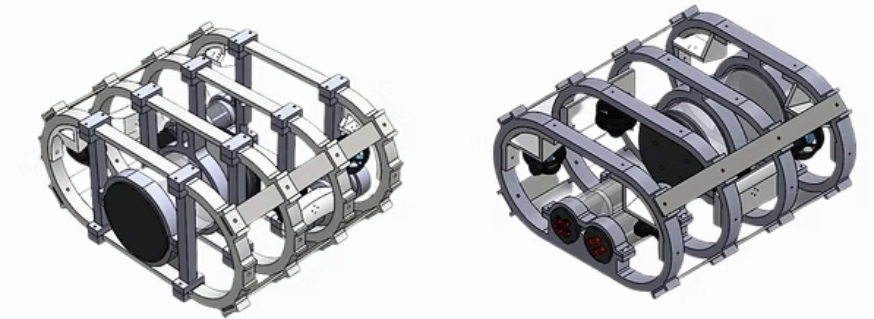
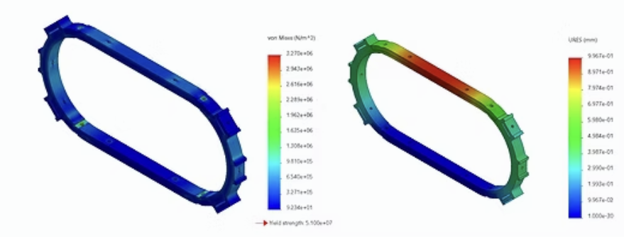

Autonomous Submarine

Date: 2021
The autonomous submarine project is a proposal design created to participate in the RoboSub Competition 2023. The purpose was to design, build and test a fully autonomous underwater vehicle (AUV) and demonstrate its autonomy by completing various tasks.
For the mechanical design, two proposals were made and the best one was chosen based on cost-effectiveness and simulation results. The first problem faced was that the laboratory didn't have enough funding to buy expensive material so existing materials had to be used. In this case, 600x600mm Nylamid plates were found and chosen for the structure. In that sense, both proposals were designed based on the size plates and material specifications.
The simulation was focused on analyzing the performance of the ribs when the submarine is subjected to an elevation by two cables. With its help, we could make sure which design would have a better support of the loads.
The stress analysis showed that the maximum applied load was 33mPa and the maximum at which the rib can withstand was 51mPa (Figure 2). Also, a deformation analysis was made, showing that the maximum deformation happens in the upper part of the structure with less than 1mm (Figure 3).

← Back to Research